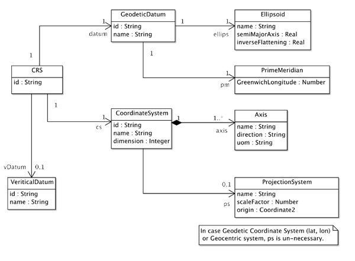
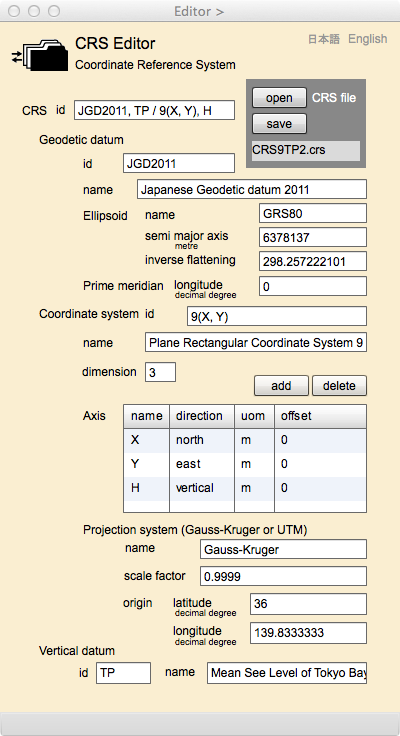

CRS Editor
座標参照系の編集
CRSは，Coordinate Reference Systemの略称で，日本語では座標参照系といいます．座標を定義するのは座標系だと思われるかもしれませんが，地球の形状を参照するという意味で，例えば緯度経度など，地球上の座標を定義づける基準のことを座標参照系といいます．ここでは，まずCRSについて解説し，次にこのページの操作法について説明します．なお，事前に講義用のスライドと合わせて読まれるとよいでしょう．
講義用スライド
09 座標参照系
座標参照系
CRSは，UMLクラス図で以下の様に定義することができます．まず，このクラス図について説明しましょう．

図１．座標参照系のUMLクラス図
CRS
このクラスは，座標参照系を代表するクラスです．
属性
id
CRSは，他の参照系と区別するために，id，つまり識別子をもちます．この識別子は一定のルールのもとで，付けることになりますので，それについては，後で説明します．
関連
datum
地球の形状を代表する測地原子 (GeodeticDatum)の役割名です，
cs
水平的な座標の軸を定義する，座標系 (CoordinateSystem)の役割名です，
vDatum
鉛直方向の座標，つまり高さの座標軸を定義する，鉛直原子 (VerticalDatum)の役割名です．鉛直原子は，水平座標しか扱わない場合は不要です．
GeodeticDatum
このクラスは，地球の形状 (Ellipsoid) を示すとともに，経度０°の線（本初子午線(PrimeMeridian)）がどこにあるかを定義します．なお，緯度０°は必ず赤道です．地球の形状を示すパラメータは測地原子 (GeodeticDtum)と呼ばれます．ここでdatumは測地学の用語として原子と訳していますが，dataの単数形です．言い換えると，dataは複数形なのですが，今日では単数形として使うことも多くなっています．さて，経度０°の線は，北極から南極を結ぶ線ですが，普通はグリニッジ天文台があった場所に基準があり，それを０°として，東向きに＋の方向があると定められています．ただし，ローカルな位置に原点をもってくる例があるので，ローカルな基準を定めるときは，グリニッジからどの角度になっているかを示す必要があります．
属性
id
測地原子は識別子をもちます．識別子の詳細については後述します．
name
測地原子の名前です．例えば2014年現在日本は『日本測地系2011』を使用しています．
関連
ellips
測地原子は地球の形状を示す準拠楕円体 (reference ellipsoid) と関連します．
pm
測地原子は，経度の基準をしめす本初子午線 (Prime Meridian) を，旧グリ二ッジ天文台を通る子午線からの東西方向の角度で示します．
Ellipsoid
このクラスは，地球の形状を定義するパラメータをもちます．地球の形状は山脈や海洋があるものの，縦に少しつぶれた楕円を，北極と南極を結ぶ軸を中心に回転させてできる回転楕円体で近似することができます．その回転楕円体を地球楕円体と呼ぶことがあります．その形状は，短軸（南北の軸）の半径 (semiMajorAxis)と，逆扁平率 (inverseFlattening)で示すことができます．普通，楕円の形と言えば，短半径と長半径で示しますが，測地学では，計算を行うための常数として逆扁平率を使うことが多いので，これを使用します．そして，逆扁平率は，以下の式で求めることができます．
inverse flattening = a / (a - b) a: 長半径の長さ，b: 短半径の長さ
さて，これらのパラメータは測地学者によって，何回も測り直されてきました，そして，技術の進歩によってその精度 (precision) も高まってきています．例えば，日本では，1841年以来，ベッセル楕円体を日本測地系として長年使ってきました．そのパラメータは以下の通りです．
semi maor axis: 6377397.155メートル
inverseFlattening: 299.152813
しかし，近年GPSの発達と普及により，より正確なパラメータが使用されるにともない，政府は測量法を改正して日本測地系2000（世界測地系ともいう）を制定しました．そのパラメータは以下の通りです．
semi maor axis: 6378137メートル
inverseFlattening: 298.257222101
この楕円体は，GRS80 (Geodetic Reference System 80)と呼ばれ，国際測地学・地球物理連合(IUGG)で1980年に採択されたものです．
ところで，2011年3月11日に東日本大震災が発生し，これに伴い，東日本の位置がずれました．そこで，政府は，三角点及び電子基準点の改測を行い，新たな測量成果（測地成果2011）を使用することとしています．そこで，測地系の名前は日本測地系2011になりました．ただし，地球の形状を示すパラメータが変更された分けではありません．変更されたのは，日本経緯度原点の位置と，日本水準原点の原点数値です．これらの値は，三角点や基準点の位置を決定するときには使用されますが，投影変換に使用することはないので，CRSのパラメータにはしていません．
属性
name
準拠楕円体の名前です．
semiMajorAxis
準拠楕円体の長半径です．長さの単位はメートルです．
inverseFlattening
逆扁平率です．
PrimeMeridian
これは本初子午線と訳しますが，経度を測る基準になる子午線のことです，子午線とは，地上を，北極から南極に最短で結ぶ線のことです．十二支は方角を示すためにも使われますが，その最初である子（ねずみ）は北を意味し，午（うま）は南を意味しますので，子午線というわけです．さて，国際的には，本初子午線は，北極からグリニッジ天文台があった場所を通り南極に至る線です．でもローカルに定義する場合は，グリニッジからの角度をここに入れることによって，本初子午線の位置をを示すことができます．日本ではローカルな本初子午線は定めていないので，GreenwichLongitudeは常にゼロです．
属性
GreenwichLongitude
グリニッジからの東西方向の角度です．日本の場合は常に０°です．
CoordinateSystem
gittokでは，座標系は，座標軸の定義 (Axis) と，投影法 (ProjectionSystem) の定義から成ります．投影法は，緯度・経度と，それを投影してできる平面座標との関係を示します．また，gittokでは，日本で最も多く使われるGauss-Kruger投影を採り上げ，その実装をしています．将来は，その他の投影法も実装するかもしれません．CoordinateSystemは，その識別子 (id)，名前 (name)，そして次元の数 (dimension)を属性とします．例えば，
id: (X, Y)
name: Gauss-Kruger
dimension: 2
等です．なおidの示し方は，後で説明します．
属性
id
投影座標系の識別子です．識別子の詳細は後述します．
name
投影法の名前です．
dimension
投影座標の次元です．
関連
axis
投影座標系の座標軸の定義をするAxisの役割名です．
ps
投影法の定義をするProjectionSystemの役割名です．
Axis
座標軸の定義はここに示します．座標軸の名前 (name)，軸の方向 (direction)，そして距離の単位 (unit) で座標軸は定義できます．例えば，
name: X
direction: north
unit: m
などです．
属性
name
座標軸の名前です．
direction
座標軸の正の方向を示します．
unit
座標の計測単位です．
ProjectionSystem
投影法の定義は，キットに保管されている座標を，XML文書にするときに緯度・経度にしたり，逆に外部からデータを読み込むときに，緯度・経度の座標を，地上平面座標に戻したりするときに使います．例えば日本には平面直角座標系という座標系が政府によって決められており，国内が１９の地域に分けられ，それぞれの地域ごとに，座標系の原点が定義されています．平面座標と緯度・経度の換算には，Gauss-Kruger投影が使われます．また，それぞれの地域の範囲は，平面座標が0.9999以内の誤差（縮尺係数といいます）に収まるように設定されています．また，世界規模の平面座標系としてUTM (Universal Transvers Mercator) 座標系があります．この座標系は，世界を縦に60のゾーン（一つのゾーンの範囲は，経度６°になる）に区切り，平面位置の誤差が0.9996になるようにしています．投影法は，やはりGauss-Kruger投影です．
投影法を定義するには，従って，投影法の名前(name)，縮尺係数 (scale factor)，平面座標の原点緯度・経度(origin)が指定されなければいけません．
属性
name
投影法の名前です．
scaleFactor
縮尺係数です．
origin
投影ための原点です．
VerticalDatum
鉛直位置，つまり高さを求めるには，その基準となる海面の説明が必要になります．それは鉛直原子と呼ばれます．日本には，国家水準原点が測量法施行令で定められていますが，その第2条２において，日本水準原点の地点及び原点数値は，
地点 東京都千代田区永田町一丁目一番二地内水準点標石の水晶板の零分画線の中点
原点数値 東京湾平均海面上二十四・三九〇〇メートル
としています．逆に言えば、水準原点の直下，24.3900mのところに，東京湾平均海面があるということです．この東京湾平均海面が，高さの基準になります．この平均海面から鉛直方向の高さを標高といいます．平均海面については，これ以外にも，港湾における土木工事などを円滑に行うために，例えば大阪湾平均海面等，地域や港湾事に定められたものがあります．
gittokでは，そのidと名称(日本水準原点など)が示されればよいとしています．idの付け方については後で解説します．
高さについては，他にも，準拠楕円体の表面からの高さ（楕円体高）などがありますが，一般に使用されるのは，標高です．
属性
id
鉛直原子の識別子です．
name
鉛直原子の名前です．
識別子の付与
座標参照系で使われる識別子は，日本においては，日本工業規格 「JIS X 7115 メタデータの附属書２」に定められています．その内容は以下の通りです．
日本で使われている座標参照系を指定するときは，両側に半角のスペースを置く“ / ”で原子と座標系とを区切り，次の表に示す略称の組合せで記述しなければならない。複数の略称を使用する場合は，“， ”（コンマ及び半角スペース）によってこれを区切る。
| 測地原子 | 略称 |
| 日本測地系2000 | JGD2000 | 日本測地系2011 | JGD2011 |
| World Geodetic Datum 1984 | WGS84 |
| 鉛直原子 | |
| 東京湾平均海面 | TP |
| 水平座標系 | |
| 測地座標系 | (B, L) |
| 平面直角座標系 | Zone No.(X, Y) |
| ユニバーサル横メルカトル座標系 | Zone No.(E, N) |
| 鉛直座標系 | |
| 東京湾平均海面上の高さ | H |
| 楕円体高 | h |
平面直角座標系 を利用する場合，例えば測地原子 として日本測地系2000を用い，平面直角座標系第Ⅲ系で座標を記述しているとき，その略称は“JGD2000 / 3 (X, Y)”となる。さらに高さのデータも含み，これが“東京湾平均海面上の高さ”のとき，略称は“JGD2000, TP / 3 (X, Y), H”となる。
CRS Editor

図２．CRS Editor
Fields
CRS file
読み込んだり書き出したりしたCRSファイルの名前がここに表示されます．
[CRS]
id (編集可能)
座標参照系の識別子をここに記入します．
[CRS: Geodetic datum]
id (編集可能)
測地原子の識別子をここに記入します．
name (編集可能)
測地原子の名前をここに記入します．
[CRS: Geodetic datum: Ellipsoid]
name (編集可能)
地球楕円体の名前をここに記入します．
semi major axis (編集可能)
楕円体の短半径の長さをここに記入します．
inverse flattening (編集可能)
逆扁平率をここに記入します．
[CRS:Geodetic datum: Prime meridian]
longitude (編集可能)
本初子午線がグリニッジから何度の位置にあるかを記入します．多くの場合値は0になります．
[CRS: Coordinate system]
id (編集可能)
投影座標系の識別子をここに記入します．
name (編集可能)
投影座標系の名前をここに記入します．
dimension (編集可能)
投影座標系の次元の数をここに記入します．
[CRS: Coordinate system: Axis]
座標軸の定義（名前，方向，単位）をここに記入します．既にある定義の値を編集する場合は，該当するセルにカーソルを移動し，クリックして，変更します．軸の定義自体を削除する場合は，その行を指定して，deleteボタンをおします．新たに定義を追加する場合はaddボタンを押して，空の行を作ってから値を記入します．
name (編集可能)
座標軸の名前がここに記入できます．
direction (編集可能)
座標軸の方向をここに記入します．記述のルールはありません．
uom (編集可能)
距離の計測単位をここに記入します．例えば ISO 31-1:1992 Qualities and units - Part1: Space and time（対応する日本の規格は JIS Z 8202-1:2000）では，長さの単位はメートルで，その定義は，1/299 792 458秒の時間に光が真空中を伝わる行程の長さ，その記号は"m"です．
offset(編集可能)
座標系によっては，それが覆う地理的な範囲内で常に座標値をプラスにするために，本来の原点から一定の距離を加えて水平座標を表示することが行われる場合がある．これをfalse easting, とか false northingという．もしそのようなシステムをとっている場合は，その値をメートル単位でここに与える．日本の場合は0である．一般に標高の場合はこのようなことは行わない．
[CRS: Coordinate system: Projection system]
name (編集可能)
投影法の名前をここに記入します．
scale factor (編集可能)
縮尺係数をここに記入します．
origin latitude (編集可能)
平面座標系の原点の緯度を十進度単位で記入します．
origin longitude (編集可能)
平面座標系の原点の経度を十進度単位で記入します．
[CRS: Vertical datium]
id (編集可能)
鉛直原子の識別子をここに記入します．
name (編集可能)
鉛直原子の名前をここに記入します．
Button
open
CRSファイルをオープンします．
save
このページで定義されたCRSをセーブします．
add
座標軸を追加します．このボタンを押すと，新たな行が追加されるので，空のセルに名前，方向，転移が記入できます．
delete
座標軸を削除します．削除する行を選択して，このボタンを押すと，その座標軸が削除されます．
日本語
今あなたが読んでいるドキュメントが表示されます．
English
You can read the tutorial written in English.